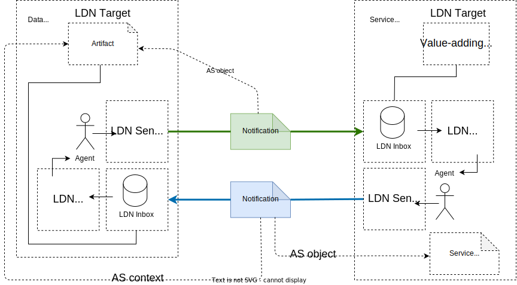

Feedback bienvenu : value-adding-networks@googlegroups.com.
1. Introduction
Figure 1 : Vue d’ensemble des participants du réseau
Cette spécification détaille un profil pour l’utilisation des notifications de Linked Data [LDN] avec des charges utiles ActivityStreams2 [AS2] dans des réseaux à valeur ajoutée.
Un réseau à valeur ajoutée, tel que considéré par cette spécification, est un réseau dans lequel des ressources Web, désignées dans cette spécification sous le nom d’Artifacts, sont mises à disposition par des nœuds dans le réseau, de la valeur est ajoutée à ces Artifacts par d’autres nœuds dans le réseau, et des notifications LDN+AS2 à cet égard sont échangées entre les nœuds du réseau.
Le type de ressources Web considérées comme des Artifacts dans un réseau à valeur ajoutée dépend de sa communauté d’utilisation. Par exemple, dans un réseau de valeur ajoutée pour la communication scientifique, les Artifacts incluraient des productions de recherche telles que des prépublications, des articles examinés, des ensembles de données, des workflows et des logiciels qui font partie du registre scientifique.
Un service à valeur ajoutée appliqué à un Artifact ne modifie pas son contenu. Au contraire, le résultat de l’application du service, désigné dans cette spécification sous le nom de Service Result, peut être associé à l'Artifact. Il pourrait s’agir, par exemple, d’informations indiquant qu’un Artifact a été rendu découvrable par un portail ; une horodatage de confiance pour un Artifact ; des informations sur un lien auquel participe l'Artifact ; la création d’une nouvelle ressource liée à l'Artifact (par exemple, une version améliorée, une traduction, une copie d’archivage).
En ce qui concerne l’échange de ces notifications LDN+AS2, la spécification distingue entre deux rôles logiques Data Node et Service Node :
-
Un Data Node est un nœud du réseau qui met à disposition des Artifacts dans le réseau.
-
Un Service Node est un nœud du réseau qui fournit des services à valeur ajoutée pour les Artifacts qui sont disponibles dans le réseau.Pour être en mesure de communiquer, chaque Data Node et Service Node dispose de capacités d'émetteur LDN ( LDN Sender ) et de récepteur LDN ( LDN Receiver ) (LDN Inbox) utilisées :
-
par un Data Node pour envoyer et recevoir des notifications LDN concernant les Artifacts qu’il rend disponibles au réseau, et,
-
par un Service Node pour envoyer et recevoir des notifications LDN concernant les services à valeur ajoutée pour les Artifacts mis à la disposition du réseau.
Les Agents agissent au nom du Data Node et du Service Node ; ils peuvent être des humains ou des machines, des individus ou des organisations. Ces Agents échangent des notifications LDN, chacune concernant un Artifacts hébergé par un Data Node.
Le style de communication envisagé entre les Nodes est de type point à point, ne nécessitant aucun concentrateur centralisé. Il est orienté push, seuls les Nodes pertinents étant informés des nouvelles informations au fur et à mesure de leur disponibilité. Les interactions entre les Nodes sont nécessairement asynchrones car certains schémas de notification ne nécessitent pas de réponse et, dans les schémas qui le requièrent, tels que la demande d’un service pour un Artifact, le temps entre une demande et l’annonce du Résultat du service est imprévisible et peut varier entre presque immédiat et plusieurs mois.
Les schémas de communication sont orientés action. Les schémas expriment quand une activité a été initiée, reconnue ou a donné un résultat. Les charges utiles des messages ne contiennent que des informations de base (dans la plupart des cas [URL] des identificateurs) pour indiquer dans quelles activités à valeur ajoutée les Nœuds de données, Nœuds de service et Artifacts sont impliqués et quels sont les Résultats de service. L’hypothèse est que des informations supplémentaires sur les entités impliquées sont disponibles en utilisant leurs identifiants dans des mécanismes de découverte automatique. En tant que tel, les charges utiles des messages sont typiquement exprimées par référence (c’est-à-dire au moyen de l'[URL] d’une entité) plutôt que par valeur (c’est-à-dire au moyen d’une description d’une entité). Un scénario courant couvert par la spécification est représenté dans la Figure 1, qui montre, sur les lignes en pointillés, préfixées par "AS", l’élément AS2 utilisé dans les charges utiles LDN+AS2 pour transmettre l’entité respective impliquée dans le réseau à valeur ajoutée :
-
Un Agent à la fin d’un Data Node utilise un Émetteur LDN pour envoyer une notification à la Boîte de Réception LDN d’un Service Node (flèche verte) demandant un service à valeur ajoutée pour un Artéfact mis à disposition par le Data Node. L’URL de l'Artéfact est fournie dans l’élément objet AS2 de la notification.
-
Un Agent à la fin du Service Node utilise un Consommateur LDN pour obtenir cette demande de la Boîte de Réception LDN du Service Node. Pourvu que le Service Node soit disposé et capable d’effectuer le service demandé, il procède. La manière dont cela est fait est en dehors du cadre de cette spécification.
-
Une fois que le service à valeur ajoutée est exécuté, un Agent à la fin du Service Node qui est conscient du Résultat de Service envoie une notification (flèche bleue) à la Boîte de Réception LDN du Data Node. Le Résultat de Service est fourni dans l’élément objet AS2 de la notification. De plus, l'Artéfact auquel le Résultat de Service se rapporte est fourni dans l’élément contexte AS2 de la notification.
-
Un Agent à la fin du Data Node consomme cette réponse en l’obtenant dans la Boîte de Réception LDN du Data Node et agit en conséquence sur le Résultat de Service de la manière jugée appropriée.
Du point de vue de LDN :- Un Artéfact mis à disposition du réseau par un Data Node est une cible LDN et possède donc une boîte de réception LDN discoverable pouvant être découverte. La boîte de réception LDN est utilisée pour recevoir les notifications LDN+AS2 qui fournissent au Data Node, agissant en tant que consommateur LDN, des informations à valeur ajoutée concernant un Artéfact.
-
Un Service Node qui fournit des services à valeur ajoutée aux Artéfacts mis à disposition du réseau est une cible LDN et possède donc une boîte de réception LDN discoverable pouvant être découverte. Cette boîte de réception LDN est utilisée pour recevoir les notifications LDN+AS2 qui fournissent au Service Node, agissant en tant que consommateur LDN, des informations concernant un Artéfact ou une demande de fourniture d’un service à valeur ajoutée pour un Artéfact.
Du point de vue d’AS2 :
-
Lorsqu’une notification LDN+AS2 est envoyée depuis un Data Node, l'Artéfact auquel la notification se rapporte est l’objet AS2, l'Agent qui envoie la notification est l’acteur AS2, et l’Agent auquel la notification est adressée est la cible AS2.
-
Lorsqu’une notification LDN+AS2 est envoyée depuis un Service Node, le Résultat du Service est l’objet AS2, l'Agent qui envoie la notification est l’acteur AS2, et l’Agent auquel la notification est adressée est la cible AS2.
2. Conformité
Les exigences de conformité sont exprimées à l’aide d’une combinaison d’assertions descriptives et de la terminologie de la RFC 2119. Les mots clés “DOIT”, “NE DOIT PAS”, "REQUIS", “DOIT”, “NE DOIT PAS”, “DEVRAIT”, “NE DEVRAIT PAS”, "RECOMMANDÉ", “PEUT”, et “OPTIONNEL” dans les parties normatives de ce document sont à interpréter comme décrit dans la RFC 2119. Cependant, pour des raisons de lisibilité, ces mots n’apparaissent pas en majuscules dans cette spécification.
Tout le texte de cette spécification est normatif, sauf les sections explicitement marquées comme non normatives, les exemples et les notes. [RFC2119]
3. Conventions du Document
Au sein de ce document, les liaisons de préfixes d’espace de noms suivantes vers les [URI] sont utilisées :| Préfixe | Espace de noms |
|---|---|
| rdf | http://www.w3.org/1999/02/22-rdf-syntax-ns# |
| as | https://www.w3.org/ns/activitystreams# |
| ldp | http://www.w3.org/ns/ldp# |
| schema | http://schema.org/ |
Lorsque dans les parties textuelles de ce document un préfixe d’espace de noms est utilisé, il doit être interprété avec les liaisons telles que stipulées ci-dessus. Dans nos exemples de charges utiles LDN+AS2, nous utilisons le JSON-LD en tant que syntaxe. Dans nos exemples JSON-LD, nous n’écrivons pas explicitement les préfixes. L’élément @context en JSON-LD définit une correspondance des termes vers les [URI]-s. Nous renvoyons à la spécification [JSON-LD] pour plus d’informations sur cette manière plus concise de notation.
4. Entités réseau
Cette section clarifie la terminologie qui a été introduite de manière intuitive dans l’introduction.
4.1. Agent
Un Agent est un participant actif dans le réseau : un Agent réalise des actions, peut être humain ou machine, individu ou organisation, et opère au nom d’un Data Node ou d’un Service Node.
4.2. Artefact
Un Artefact est une ressource Web identifiée par une [URL] qui est mise à disposition du réseau par un Data Node, et qui sert de point focal principal d’interaction entre les Agents. Un Artefact peut être atomique ou arbitrairement complexe. La manière dont les Artefacts sont organisés est en dehors du champ d’application de cette spécification et dépend de la communauté implémentante.
4.3. Nœud de Données
Un Data Node est un nœud réseau qui rend des artefacts disponibles sur le réseau. Un Data Node fournit une ou plusieurs boîtes de réception LDN via lesquelles les agents qui agissent au nom du Data Node peuvent être contactés. Ces boîtes de réception LDN sont configurées pour recevoir des notifications LDN+AS2 concernant les artefacts rendus disponibles sur le réseau par le Data Node. Un Data Node doit être identifié par une [URL], de préférence un [WebID]. À partir de cette URL, des informations supplémentaires sur le Data Node, telles que l’emplacement de ses boîtes de réception LDN, peuvent être rendues accessibles.4.4. Nœud de service
Un Service Node est un nœud réseau qui fournit des services à valeur ajoutée pour les artefacts hébergés par les nœuds de données. Un Service Node fournit une ou plusieurs boîtes de réception LDN via lesquelles les agents qui agissent au nom du Service Node peuvent être contactés. Ces boîtes de réception LDN sont configurées pour recevoir des notifications LDN+AS2 concernant les artefacts rendus disponibles sur le réseau par les nœuds de données. Un Service Node doit être identifié par une [URL], de préférence un [WebID]. À partir de cette URL, des informations supplémentaires sur le Service Node, telles que l’emplacement de ses boîtes de réception LDN, peuvent être rendues accessibles.
4.5. Résultat de service
Un résultat de service correspond au résultat de la fourniture d’un service à valeur ajoutée par un Service Node pour un artefact rendu disponible sur le réseau par un Data Node. Un résultat de service peut être une ressource Web identifiée par une [URL] ou des informations fournies directement dans une notification LDN+AS2.
Un résultat de service qui est une ressource Web identifiée par une [URL] peut lui-même devenir un artefact lorsqu’il est rendu disponible sur le réseau par un Data Node qui, par exemple, est associé au Service Node ayant généré le résultat de service. Cela rend le résultat de service disponible en tant que nouveau artefact pour lequel de nouveaux services à valeur ajoutée peuvent être fournis.
5. Propriétés dans les notifications LDN+AS2
Dans un réseau à valeur ajoutée, les notifications LDN sont envoyées d’un Agent à un autre Agent. Les charges utiles des notifications sont exprimées à l’aide du vocabulaire ActivityStreams 2.0 et DEVRAIENT utiliser le [JSON-LD] comme syntaxe par défaut, mais d’autres syntaxes RDF PEUVENT être utilisées. Chaque notification décrit une Activité AS2 impliquant soit un Artéfact, un Résultat de service relatif à un Artéfact, ou une activité AS2 précédente.
Cette section décrit les propriétés utilisées dans les notifications pour décrire une activité et fournit des détails sur leur contenu : les propriétés principales d’identifiant et de type JSON-LD et l’objet AS2, l’origine, la cible, l’acteur, le contexte, et les propriétés en réponse à.
5.1. Identifiant JSON-LD
Une notification LDN+AS2 DOIT spécifier un identifiant pour l’activité, exprimé en JSON-LD comme @id ou abrégé en id, et sa valeur DOIT être un [URI] valide. Dans le cas où ce [URI] est une [URL], il DOIT être déréférençable et renvoyer une représentation de la notification elle-même. Lorsqu’il est fait référence à une activité, son identifiant d’activité DOIT être utilisé. Les nœuds du réseau NE DOIVENT PAS modifier ou supprimer l’identifiant de l’activité lors du traitement des notifications LDN+AS2.
Il convient de noter que l’identifiant de l’activité est distinct de l’identifiant de la notification, qui est l'[URL] émis par le récepteur LDN lorsque la notification LDN+AS2 décrivant l’activité est reçue dans sa boîte de réception LDN. Un récepteur LDN peut choisir de refléter des composants de l’identifiant de l’activité dans l’identifiant de la notification qu’il émet, mais dans ce cas, les nœuds du réseau ne peuvent pas déduire une relation entre l’identifiant de l’activité et l’identifiant de la notification sur cette base.
Pour établir une communication robuste sur le réseau, les activités doivent être au moins identifiables de manière unique dans le cadre du réseau. Par conséquent, un identifiant de tout type utilisé DOIT être un [URI] valide.
-
L’identifiant de l’activité est
https://acme.org/events/alice/0F402B08-F676-40EE-9D4B-480B3F985B65. Puisque l’identifiant de l’activité est une [URL], il peut être référencé pour produire la notification LDN+AS2 qu’Alice a envoyée à Bob. -
Alice est l’Agent agissant au nom d’un Data Node qui a rendu son Artifact
https://acme.org/artifacts/alice/five_steps_to_success.htmldisponible. -
Bob est l’Agent agissant au nom d’un Service Node qui rend sa boîte de réception LDN
https://infinity.science.com/inbox/bobaccessible.
{ "@context" : "https://www.w3.org/ns/activitystreams" , "id" : "https://acme.org/events/alice/0F402B08-F676-40EE-9D4B-480B3F985B65" , "type" : "Create" , "actor" : { "id" : "https://orcid.org/0000-0007-01219-312199" , "inbox" : "https://acme.org/inbox/alice" , "name" : "Alice" , "type" : "Person" }, "origin" : { "id" : "https://acme.org/system" , "name" : "ACME Research Institute System" , "type" : "Application" }, "object" : { "id" : "https://acme.org/artifacts/alice/five_steps_to_success.html" , "type" : "Article" }, "target" : { "id" : "https://orcid.org/0000-0109-01931-191019" , "inbox" : "https://infinity.science.com/inbox/bob" , "name" : "Bob" , "type" : "Person" } }
5.2. Type JSON-LD
Une notification LDN+AS2 DOIT spécifier un type d’activité, exprimé en JSON-LD comme @type ou abrégé en type, et sa valeur DOIT être le type d’activité AS2 qu’elle décrit. Seul le sous-ensemble des types d’activité AS2 indiqués ici sont pris en charge :- Activités AS2 exprimant l’état d’un Artéfact : as:Create, as:Update, as:Remove, as:Announce :
-
as:Create: Un Agent a créé un Artéfact qui est rendu disponible par un Data Node. -
as:Update: Un Agent a mis à jour un Artéfact qui est rendu disponible par un Data Node. -
as:Remove: Un Agent a supprimé un Artéfact qui est rendu disponible par un Data Node. -
as:Announce: Un Agent annonce l’existence d’un Artéfact qui est rendu disponible par un Data Node. Contrairement àas:Create, qui indique quand un Artéfact a été créé,as:Announcese contente d’indiquer son existence.
-
Activités AS2 liées à l’application de services à valeur ajoutée à un Artéfact :
as:Offer,as:Accept,as:Reject,as:Announceetas:Undo:-
as:Offer: Un Agent propose un Artéfact à un autre Agent afin de demander la fourniture d’un service. -
as:Accept: Un Agent accepte de fournir un service qui a été demandé pour un Artéfact spécifique par un autre Agent. Il s’agit d’une réponse à uneas:Offerprécédemment reçue. -
as:Reject: Un Agent refuse de fournir un service qui a été demandé pour un Artéfact spécifique par un autre Agent. Il s’agit d’une réponse à uneas:Offerprécédemment reçue. -
as:Announce: Un Agent annonce un Résultat de Service concernant un Artéfact qui est soit le résultat de l’exécution d’un service précédemment demandé, soit volontaire. -
as:Undo: Un Agent révoque une activité antérieure de typeas:Offer,as:Accept,as:Rejectouas:Announce.
-
En plus de ces types d’activités AS2, des types ([URI]) issus de vocabulaires choisis par un domaine d’application PEUVENT être spécifiés.
as:Announce comme moyen d’annoncer la disponibilité de la revue de Bob et schema:EndorseAction comme moyen de transmettre que la publication d’Alice est approuvée par Bob.
-
Bob est l' Agent agissant au nom du Service Node
Infiniti science publishing. -
La revue de Bob est un Résultat de Service mis à disposition en tant que ressource Web avec l’URI
https://infinity.science.com/artifacts/bob/review_123.html. -
Alice est l' Agent agissant au nom d’un Data Node qui a rendu disponible son Artefact
https://acme.org/artifacts/alice/five_steps_to_success.htmlet qui rend sa boîte de réception LDNhttps://acme.org/inbox/alicedécouvrable.
{ "@context" : [ "https://www.w3.org/ns/activitystreams" , { "schema" : "https://schema.org/" } ], "id" : "urn:uuid:42D2F3DC-0770-4F47-BF37-4F01E0382E32" , "type" : [ "Announce" , "schema:EndorseAction" ], "actor" : { "id" : "https://orcid.org/0000-0109-01931-191019" , "inbox" : "https://infinity.science.com/inbox/bob" , "name" : "Bob" , "type" : [ "Person" , "schema:publisher" ] }, "origin" : { "id" : "https://infinity.science.com" , "name" : "Infiniti science publishing" , "type" : "Application" }, "context" : "https://acme.org/artifacts/alice/five_steps_to_success.html" , "object" : { "id" : "https://infinity.science.com/artifacts/bob/review_123.html" , "type" : "Article" }, "target" : { "id" : "https://orcid.org/0000-0007-01219-312199" , "inbox" : "https://acme.org/inbox/alice" , "name" : "Alice" , "type" : "Person" } }
5.3. Objet AS2
Une notification LDN+AS2 DOIT spécifier un objet AS2, exprimé au moyen de la propriété as:object. Selon le type d’activité, l’objet AS2 peut se rapporter à :
-
Un Artefact rendu disponible par un Data Node ;
-
Un Résultat de Service généré par un Service Node ;
-
Une activité précédente.
Pour as:object, l’un des Types d’Objet de base DOIT être exprimé. En plus de ces Types d’Objet, des types ([URI]) provenant de vocabulaires choisis par un domaine d’application PEUVENT également être spécifiés.
Dans le cas où l’objet AS2 est un Artefact, il DOIT spécifier l'[URL] de l' Artefact et il est RECOMMANDÉ que cette [URL] prenne en charge des mécanismes de découverte automatique (par exemple, un lien typé dans l’en-tête HTTP Link) pour permettre aux clients du réseau d’obtenir des informations supplémentaires sur l' Artefact. De telles informations supplémentaires concernant l' Artefact PEUVENT également être fournies en ligne dans la valeur de l’objet AS2.
Dans le cas où l’objet AS2 est un Résultat de Service:- Si le Résultat du Service est une ressource Web identifiée par une [URL], cette [URL] DOIT être fournie en tant que valeur de l’objet AS2;
-
Si le Résultat du Service n’est pas une ressource Web identifiée par une [URL], elle est fournie en ligne en tant que valeur de l’objet AS2.
-
Dans un cas particulier, un Résultat du Service peut être des liens, auquel cas le type d’activité AS2 est
as:Relationshipet les liens sont fournis en utilisant la construction sujet/relation/objet d’AS2. -
Dans le cas où l’objet AS2 est une activité antérieure, il DOIT au moins transmettre son identifiant d’activité (valeur de la propriété id de l’activité antérieure) et il PEUT transmettre des informations supplémentaires sur l’activité antérieure.
-
https://acme.org/artifacts/alice/five_steps_to_success.html est fourni en tant que valeur de la propriété objet. https://infinity.science.com/artifacts/bob/review_123.html est fournie en tant que valeur de la propriété objet. -
Le Résultat du Service est une relation de type
http://purl.org/spar/cito/reviewsentre la revue de Bob et l'Artéfact d’Alice. -
Bob est l'Agent agissant au nom du Service Node Infiniti science publishing.
-
Alice est l'Agent agissant au nom d’un Data Node qui rend son Artéfact
https://acme.org/artifacts/alice/five_steps_to_success.htmldisponible et rend sa boîte de réception LDN https://acme.org/inbox/alice découvrable.
{ "@context" : [ "https://www.w3.org/ns/activitystreams" , { "schema" : "https://schema.org/" } ], "id" : "urn:uuid:42D2F3DC-0770-4F47-BF37-4F01E0382E32" , "type" : [ "Announce" , "schema:EndorseAction" ], "actor" : { "id" : "https://orcid.org/0000-0109-01931-191019" , "inbox" : "https://infinity.science.com/inbox/bob" , "name" : "Bob" , "type" : [ "Person" , "schema:publisher" ] }, "origin" : { "id" : "https://infinity.science.com" , "name" : "Infiniti science publishing" , "type" : "Application" }, "context" : "https://acme.org/artifacts/alice/five_steps_to_success.html" , "object" : { "id" : "urn:uuid:98ED7A80-BBF8-4F01-A9CD-AA781F769CCD" , "type" : "Relationship" , "subject" : "https://infinity.science.com/artifacts/bob/review_123.html" , "relationship" : "http://purl.org/spar/cito/reviews" , "object" : "https://acme.org/artifacts/alice/five_steps_to_success.html" }, "target" : { "id" : "https://orcid.org/0000-0007-01219-312199" , "inbox" : "https://acme.org/inbox/alice" , "name" : "Alice" , "type" : "Person" } }
5.4. Acteur AS2, origine AS2 et cible AS2
Une notification LDN+AS2 :- DOIT spécifier l'Agent qui envoie la notification, exprimé au moyen de la propriété as:actor et sa valeur DOIT être un [URL] qui identifie l'Agent ;
-
PEUT également spécifier le composant logiciel LDN Sender qui était responsable de l’envoi de la notification au nom de l'Agent, exprimé au moyen du prédicat
as:originet sa valeur DOIT être un [URL] qui identifie le composant logiciel ; -
PEUT spécifier l'Agent auquel la notification est adressée, exprimé au moyen du prédicat
as:targetet sa valeur DOIT être un [URL] qui identifie l'Agent.
Pour as:actor, as:origin et as:target, l’un des Types d’acteur AS2 principaux DOIT être exprimé. En plus de ces Types d’acteur AS2, des types ([URI]) provenant de vocabulaires choisis par un domaine d’application PEUVENT être spécifiés.
as:actor, as:origin et as:target DEVRAIENT avoir une boîte de réception LDN. L'[URL] de la boîte de réception LDN :
-
Peut être fournie en tant que valeur de
ldp:inboxdans la description de ces entités dans la charge utile de la notification ; -
Peut être découverte en tant que cible de lien d’un lien avec le type de relation de lien
http://www.w3.org/ns/ldp#inboxfourni dans l’en-tête de réponse de lien HTTP de l'[URL] de la boîte de réception LDN.
-
Bob est l'Agent qui envoie la notification : l'[URL] qui identifie Bob, l'[URL] de la boîte de réception LDN de Bob, deux types d’acteurs (un Type d’acteur AS2 et un autre), ainsi que le nom de Bob sont fournis dans la propriété
as:actorde la charge utile de la notification. -
Bob utilise une application pour envoyer la notification. Des informations sur l’application sont fournies dans la propriété
as:origin. -
Bob adresse sa notification à Alice. Des informations sur Alice sont fournies dans la propriété
as:target, et comprennent l'[URL] qui identifie Alice, l'[URL] de sa boîte de réception LDN et son Type d’acteur AS2.
5.5. Contexte AS2
Lors de l’envoi d’une notification à un Data Node concernant l’un des Artéfacts qu’il rend disponibles, la notification LDN+AS2 DOIT inclure la propriété as:context et, lorsqu’elle est incluse, DOIT au moins transmettre l'[URL] de l'Artéfact comme valeur. Cette spécification n’accorde aucune signification spécifique à l’utilisation de as:context pour les notifications envoyées à un Service Node.
Pour as:context, l’un des Types d’Objet de base PEUT être exprimé. En plus de ces Types d’Objet, des types ([URIs]) provenant de vocabulaires choisis par un domaine d’application PEUVENT être spécifiés.
https://acme.org/artifacts/alice/five_steps_to_success.html de cet Artéfact est fourni dans la propriété as:context de ces notifications. as:object tandis que as:context n’est pas utilisé car l’annonce ne concerne pas un Artéfact qui est rendu disponible à l’extrémité du destinataire. 5.6. AS2 inReplyTo
Une notification LDN+AS2 qui est envoyée en réponse à une notification précédemment reçue DOIT inclure la propriété as:inReplyTo, et sa valeur DOIT être l’identifiant de l’activité (valeur de la propriété id) de la notification précédente. Pour une telle notification, la propriété as:object reflète également l’identifiant de l’activité de la notification précédente mais peut inclure des informations supplémentaires, voir § 5.3 Objet AS2.
Des exemples sont fournis dans § 6.2.2 Le nœud de service fournit un résultat de service et § 6.3.2 Le noeud de service fournit le résultat du service.
6. Modèles de communication réseau
Dans un réseau à valeur ajoutée, les Nodes, en particulier les Agents agissant au nom des Nodes, communiquent en s’envoyant des notifications LDN+AS2. Ces notifications sont livrées aux boîtes de réception LDN mises à disposition par les Nœuds de Données et les Nœuds de Service au bénéfice des Agents qui gèrent les Artifacts et la fourniture de services, respectivement.
Selon le type d’interaction, un Agent peut être l’expéditeur ou le destinataire des messages. Cette spécification décrit les modèles de communication suivants entre les Nodes du réseau : les modèles de communication unidirectionnelle et de demande-réponse. Ils sont détaillés dans le reste de cette section.
6.1. Modèles de communication unidirectionnelle
Dans les modèles de communication unidirectionnelle, les notifications expriment des faits tels que "J’ai effectué cette activité sur un Artifact". On n’attend pas de telles notifications qu’elles engendrent une réponse.
En général, dans une communication unidirectionnelle, un Nœud fournit des informations non sollicitées à un autre Nœud. Divers modèles unidirectionnels existent :
-
Dans une communication unidirectionnelle d’un Data Node à un Service Node, un Agent agissant au nom du Data Node propose des informations sur une activité liée à un Artifact mis à disposition par le Data Node à un Agent à l’extrémité du Service Node.
-
Dans une communication unidirectionnelle d’un Service Node à un Data Node, un Agent agissant au nom du Service Node propose des informations concernant un Résultat de Service relatif à un Artifact mis à disposition par le Data Node à un Agent à l’extrémité de ce Data Node.
-
Dans une communication unidirectionnelle d’un Service Node à un Service Node, un Agent agissant au nom du Nœud expéditeur transmet des informations concernant un Résultat de Service au nœud récepteur.
6.1.1. Nœud de Données vers Nœud de Service
Figure 2 : Un Nœud de Données envoie une notification concernant un Artifact à un Nœud de Service.Le modèle de nœud de données unidirectionnel vers nœud de service est utilisé pour envoyer des informations non sollicitées concernant un Artifact à un autre Agent dans le réseau. Ces cas sont pris en compte :
-
Informer l'Agent destinataire des actions CRUD (Créer, Mettre à jour, Supprimer) sur l'Artifact ;
-
Annoncer l’existence d’un Artifact à l'Agent destinataire.
Pour une telle notification :
-
Le type d’activité est
as:Create,as:Remove,as:Updateouas:Announce. -
La propriété
as:objectfournit des informations concernant l'Artifact auquel l’activité se rapporte. -
Les exigences relatives aux propriétés sont résumées dans le tableau ci-dessous, et leur utilisation est soumise aux directives fournies dans § 5 Propriétés dans les notifications LDN+AS2.
| Exigences | Propriétés |
|---|---|
| Requis | @id, @type, as:actor, as:object |
| Optionnel | as:origin, as:target |
| Non utilisé | as:context , as:inReplyTo |
L’Institut de Recherche ACME (nœud de données) notifie Infinity Science (nœud de service) selon un modèle unidirectionnel de la création du nouvel Artifact http://acme.org/artifacts/alice/five_steps_to_success.html.
{ "@context": "https://www.w3.org/ns/activitystreams", "id": "urn:uuid:0F402B08-F676-40EE-9D4B-480B3F985B65", "type": "Create", "actor": { "id": "https://acme.org/profile/card#us", "inbox": "https://acme.org/inbox/", "name": "ACME Research Institute", "type": "Organization" }, "origin": { "id": "https://acme.org/system", "name": "ACME Research Institute System", "type": "Application" }, "object": { "id": "https://acme.org/artifacts/alice/five_steps_to_success.html", "type": "Article" }, "target": { "id": "https://infinity.science.com/profile/card#us", "inbox": "https://infinity.science.com/inbox/", "name": "Infinity Science", "type": "Organization" } }
6.1.2. Nœud de service vers nœud de données
Figure 3 : Un Nœud de Service envoie une notification sur un Résultat de Service concernant un Artifact à un Nœud de Données.
Le modèle de nœud de service unidirectionnel vers nœud de données est utilisé pour envoyer une notification non sollicitée concernant un Résultat de Service concernant un Artifact à un Agent situé au niveau du Data Node qui rend l'Artifact disponible.
Pour une telle notification :- Le type d’activité est as:Announce.
-
La propriété
as:objecttransmet le Résultat de Service. -
La propriété
as:contexttransmet des informations concernant l'Artéfact auquel le Résultat de Service se rapporte. -
Les exigences concernant les propriétés sont résumées dans le tableau ci-dessous et leur utilisation est soumise aux directives fournies dans § 5 Propriétés dans les notifications LDN+AS2.
| Exigences | Propriétés |
|---|---|
| Requis | @id, @type, as:actor, as:context, as:object |
| Optionnel | as:origin, as:target |
| Non utilisé | as:inReplyTo |
{ "@context" : "https://www.w3.org/ns/activitystreams" , "id" : "urn:uuid:239FD510-03F4-4B56-B3A0-0D3B92F3826D" , "type" : "Announce" , "actor" : { "id" : "https://fairfield.org/about#us" , "inbox" : "https://fairfield.org/inbox" , "name" : "Fairfield City Repository" , "type" : "Organization" }, "origin" : { "id" : "https://darwin.fairfield.org/system" , "name" : "Fairfield City Darwin System" , "type" : "Application" }, "context" : "https://acme.org/artifacts/alice/five_steps_to_success.html" , "object" : { "id" : "urn:uuid:CF21A499-1BDD-4B59-984A-FC94CF6FBA86" , "type" : "Relationship" , "subject" : "https://acme.org/artifacts/alice/five_steps_to_success.html" , "relationship" : "https://www.iana.org/memento" , "object" : "https://darwin.fairfield.org/objects/317831-13210" }, "target" : { "id" : "https://acme.org/profile/card#us" , "inbox" : "https://acme.org/inbox/" , "name" : "ACME Research Institute " , "type" : "Organization" } }
6.1.3. Nœud de Service vers Nœud de Service
Figure 4 : Le nœud de service A envoie une notification concernant un Résultat de Service se rapportant à un Artéfact d’un certain nœud de données à un autre nœud de service B.
Le schéma unidirectionnel de nœud de service à nœud de service est utilisé pour transmettre de manière proactive un Résultat de Service d’un Service Node à un autre Service Node. Un Agent agissant au nom du Service Node expéditeur fait du bénévolat pour un Résultat de Service en envoyant une notification à un Agent à l’extrémité du Service Node récepteur. Le Résultat de Service est le résultat de la fourniture d’un service pour un Artéfact mis à disposition par un Data Node.
Pour une telle notification :- Le type d’activité est as:Announce.
-
La propriété
as:objecttransmet le Service Result. -
La propriété
as:contexttransmet des informations concernant l'Artifact auquel le Service Result se rapporte. -
Les exigences concernant les propriétés sont résumées dans le tableau ci-dessous et leur utilisation est soumise aux directives fournies dans § 5 Propriétés dans les notifications LDN+AS2.
| Exigences | Propriétés |
|---|---|
| Requis | @id, @type, as:actor, as:object |
| Optionnel | as:context, as:origin, as:target |
| Non utilisé | as:inReplyTo |
{ "@context" : "https://www.w3.org/ns/activitystreams" , "id" : "urn:uuid:239FD510-03F4-4B56-B3A0-0D3B92F3826D" , "type" : "Announce" , "actor" : { "id" : "https://fairfield.org/about#us" , "inbox" : "https://fairfield.org/inbox" , "name" : "Fairfield City Repository" , "type" : "Organization" }, "origin" : { "id" : "https://darwin.fairfield.org/system" , "name" : "Fairfield City Darwin System" , "type" : "Application" }, "context" : "https://acme.org/artifacts/alice/five_steps_to_success.html" , "object" : { "id" : "urn:uuid:CF21A499-1BDD-4B59-984A-FC94CF6FBA86" , "type" : "Relationship" , "subject" : "https://acme.org/artifacts/alice/five_steps_to_success.html" , "relationship" : "https://www.iana.org/memento" , "object" : "https://darwin.fairfield.org/objects/317831-13210" }, "target" : { "id" : "https://anri.go.id/profile/card#us" , "inbox" : "https://anri.go.id/inbox/" , "name" : "Arsip Nasional Republik Indonesia" , "type" : "Organization" } }
6.2. Demande-réponse : Noeud de Données à Noeud de Service
Le schéma de communication demande-réponse entre un Data Node et un Service Node implique une communication plus élaborée concernant la fourniture, par un Service Node, d’un service à valeur ajoutée pour un artefact mis à disposition par un Data Node. Dans une communication de demande-réponse concernant la fourniture d’un service, des notifications peuvent être échangées entre les Nodes sur des laps de temps pouvant être presque immédiats mais pouvant également s’étendre sur des jours, des semaines, voire des mois. La manière dont un service est fourni n’est pas couverte par cette spécification. Les aspects considérés concernent uniquement la volonté d’un Service Node de fournir ou non un service demandé, ainsi que le résultat du service.
En général, ce schéma de demande-réponse est transactionnel. Le Data Node qui initie la communication s’attend à une réponse du Service Node. Le flux d’informations global dans une communication de demande-réponse est le suivant :- Un Agent opérant pour le compte d’un Data Node envoie une notification de demande à un Agent opérant à la fin d’un Service Node demandant la fourniture d’un service pour un artefact mis à disposition par le Data Node.
-
Un Agent opérant pour le compte du Service Node envoie une notification de réponse à un Agent à la fin du Data Node annonçant le résultat du service.
-
Facultativement, après avoir reçu une notification de demande, un Agent à la fin du Service Node peut envoyer une notification de réponse à un Agent à la fin du Data Node pour indiquer si le Service Node accepte ou refuse la demande de fournir un service.
-
Un Agent opérant pour le compte d’un Data Node peut envoyer une notification à un Agent opérant à la fin d’un Service Node demandant d’annuler une demande précédente de fourniture d’un service pour un artefact mis à disposition par le Data Node. Une telle demande d’annulation peut être envoyée à n’importe quelle étape du motif demande-réponse, mais il revient au Service Node de décider si elle se traduit effectivement par la non-fourniture du service initialement demandé.
6.2.1. Le nœud de données demande un service
Figure 5 : Un nœud de données envoie une notification avec un type d’activité : Offre à un nœud de service comme moyen de demander un service à valeur ajoutée pour l’un de ses artefacts.
Le motif de demande-réponse entre un Data Node et un Service Node débute lorsqu’un Agent opérant pour le compte d’un Data Node envoie une notification à un Agent opérant à la fin d’un Service Node demandant la fourniture d’un service pour un artefact mis à disposition par le Data Node.
Pour une telle notification :- Le type d’activité est as:Offer.
-
La propriété
as:objectfournit des informations sur l'Artifact pour lequel le service est demandé. -
Les exigences concernant les propriétés sont résumées dans le tableau ci-dessous et leur utilisation est soumise aux directives fournies dans § 5 Propriétés dans les notifications LDN+AS2.
| Exigences | Propriétés |
|---|---|
| Requis | @id, @type, as:actor, as:object |
| Optionnel | as:origin, as:target |
| Non utilisé | as:context , as:inReplyTo |
{ "@context" : [ "https://www.w3.org/ns/activitystreams" , { "schema" : "https://schema.org/" } ], "id" : "urn:uuid:6E5FAF88-A7F1-47A4-B087-77345EBFF495" , "type" : "Offer" , "actor" : { "id" : "https://acme.org/profile/card#us" , "inbox" : "https://acme.org/inbox/" , "name" : "ACME Research Institute" , "type" : "Organization" }, "origin" : { "id" : "https://acme.org/system" , "name" : "ACME Research Institute System" , "type" : "Application" }, "object" : { "id" : "http://acme.org/artifacts/alice/data-set-2022-01-19.zip" , "type" : [ "Document" , "schema:Dataset" ] }, "target" : { "id" : "https://data.archive.xyz.net/" , "inbox" : "https://data.archive.xyz.net/inbox/" , "name" : "Data Archive XYZ" , "type" : "Organization" } }
6.2.2. Le nœud de service fournit un résultat de service
Figure 6 : Le nœud de service dispose d’un résultat de service disponible concernant l'Artifact* sur le nœud de données. Le nœud de service envoie une notification d’annonce au nœud de données à ce sujet.*
Le schéma de demande-réponse entre un Data Node et un Service Node se termine lorsqu’un Agent opérant au nom d’un Service Node envoie une notification à un Agent opérant à l’extrémité d’un Data Node transmettant le Résultat de service pour un service qui a été précédemment demandé.
Pour une telle notification :- Le type d’activité est as:Announce.
-
La propriété
as:objecttransmet le Résultat du Service. -
La propriété
as:contextse réfère à l'Artéfact pour lequel le service a été demandé, c’est-à-dire la valeur de la propriétéas:objectde la demande de service précédente qui a été envoyée sous forme de notification avec le type d’activitéas:Offer(voir § 6.2.1 Le nœud de données demande un service). -
La propriété
as:inReplyTotransmet l’identifiant d’activité (valeur de la propriétéid) de la demande de service qui a été envoyée sous forme de notification avec le type d’activitéas:Offer(voir la section § 6.2.1 Le nœud de données demande un service). -
Les exigences concernant les propriétés sont résumées dans le tableau ci-dessous et leur utilisation est soumise aux directives fournies dans § 5 Propriétés dans les notifications LDN+AS2.
| Exigences | Propriétés |
|---|---|
| Requis | @id, @type, as:actor, as:object, as:inReplyTo |
| Recommandé | as:context |
| Optionnel | as:origin, as:target |
{ "@context" : [ "https://www.w3.org/ns/activitystreams" , { "schema" : "https://schema.org/" } ], "id" : "urn:uuid:ED0E06DA-4294-43C0-8E87-800558E4045B" , "type" : "Announce" , "actor" : { "id" : "https://data.archive.xyz.net/" , "inbox" : "https://data.archive.xyz.net/inbox/" , "name" : "Data Archive XYZ" , "type" : "Organization" }, "origin" : { "id" : "https://data.archive.xyz.net/system" , "name" : "XYZ Archiving Department" , "type" : "Application" }, "inReplyTo" : "urn:uuid:6E5FAF88-A7F1-47A4-B087-77345EBFF495" , "context" : "http://acme.org/artifacts/alice/data-set-2022-01-19.zip" , "object" : { "id" : "urn:uuid:CF21A499-1BDD-4B59-984A-FC94CF6FBA86" , "type" : "Relationship" , "subject" : "http://acme.org/artifacts/alice/data-set-2022-01-19.zip" , "relationship" : "https://www.iana.org/memento" , "object" : "https://data.archive.xyz.net/data/memento/21daF1921" }, "target" : { "id" : "https://acme.org/profile/card#us" , "inbox" : "https://acme.org/inbox/" , "name" : "ACME Research Institute" , "type" : "Organization" } }
6.2.3. Le nœud de service accuse réception d’une demande de service
Figure 7 : Un nœud de service accuse facultativement réception d’une Offre précédemment envoyée par un Nœud de Données.Un Agent agissant au nom d’un Service Node peut envoyer une notification à un Agent agissant à la fin d’un Data Node pour accuser réception d’une demande de service et indiquer si le service sera effectivement fourni ou non.
Pour une telle notification :
-
La propriété
as:objectfait référence à la demande préalable de service qui a été envoyée au moyen d’une notification avec le type d’activitéas:Offer(voir § 6.2.1 Le nœud de données demande un service). Elle transmet au moins son identifiant d’activité (valeur de la propriétéid). -
La propriété
as:contextfait référence à l’artefact pour lequel le service a été demandé, c’est-à-dire la valeur de la propriétéas:objectde la demande préalable de service qui a été envoyée au moyen d’une notification avec le type d’activitéas:Offer(voir § 6.2.1 Le nœud de données demande un service). -
La propriété
as:inReplyTotransmet l’identifiant d’activité (valeur de la propriétéid) de la demande de service qui a été envoyée au moyen d’une notification avec le type d’activitéas:Offer(voir § 6.2.1 Le nœud de données demande un service). -
Les exigences concernant les propriétés sont résumées dans le tableau ci-dessous et leur utilisation est soumise aux directives fournies dans § 5 Propriétés dans les notifications LDN+AS2.
| Exigences | Propriétés |
|---|---|
| Requise | @id, @type, as:actor, as:object |
| Recommandée | as:context, as:inReplyTo |
| Optionnelle | as:origin, as:target |
{ "@context" : [ "https://www.w3.org/ns/activitystreams" , { "schema" : "https://schema.org/" } ], "id" : "urn:uuid:9C0ED771-B7F3-4A50-8A92-72DF63215BCB" , "type" : "Accept" , "actor" : { "id" : "https://data.archive.xyz.net/" , "inbox" : "https://data.archive.xyz.net/inbox/" , "name" : "Data Archive XYZ" , "type" : "Organization" }, "origin" : { "id" : "https://data.archive.xyz.net/system" , "name" : "XYZ Archiving Department" , "type" : "Application" }, "inReplyTo" : "urn:uuid:6E5FAF88-A7F1-47A4-B087-77345EBFF495" , "context" : "http://acme.org/artifacts/alice/data-set-2022-01-19.zip" , "object" : { "id" : "urn:uuid:6E5FAF88-A7F1-47A4-B087-77345EBFF495" , "type" : "Offer" , "actor" : { "id" : "https://acme.org/profile/card#us" , "inbox" : "https://acme.org/inbox/" , "name" : "ACME Research Institute" , "type" : "Organization" }, "origin" : { "id" : "https://acme.org/system" , "name" : "ACME Research Institute System" , "type" : "Application" }, "object" : { "id" : "http://acme.org/artifacts/alice/data-set-2022-01-19.zip" , "type" : [ "Document" , "schema:Dataset" ] }, "target" : { "id" : "https://data.archive.xyz.net/" , "inbox" : "https://data.archive.xyz.net/inbox/" , "name" : "Data Archive XYZ" , "type" : "Organization" } }, "target" : { "id" : "https://acme.org/profile/card#us" , "inbox" : "https://acme.org/inbox/" , "name" : "ACME Research Institute" , "type" : "Organization" } }
{ "@context" : [ "https://www.w3.org/ns/activitystreams" , { "schema" : "https://schema.org/" } ], "id" : "urn:uuid:ED4CB09E-F74C-44E8-AA0D-BA74CDE0CDC7" , "type" : "Reject" , "actor" : { "id" : "https://data.archive.xyz.net/" , "inbox" : "https://data.archive.xyz.net/inbox/" , "name" : "Data Archive XYZ" , "type" : "Organization" }, "origin" : { "id" : "https://data.archive.xyz.net/system" , "name" : "XYZ Archiving Department" , "type" : "Application" }, "inReplyTo" : "urn:uuid:6E5FAF88-A7F1-47A4-B087-77345EBFF495" , "context" : "http://acme.org/artifacts/alice/data-set-2022-01-19.zip" , "object" : { "id" : "urn:uuid:6E5FAF88-A7F1-47A4-B087-77345EBFF495" , "type" : "Offer" , "actor" : { "id" : "https://acme.org/profile/card#us" , "inbox" : "https://acme.org/inbox/" , "name" : "ACME Research Institute" , "type" : "Organization" }, "origin" : { "id" : "https://acme.org/system" , "name" : "ACME Research Institute System" , "type" : "Application" }, "object" : { "id" : "http://acme.org/artifacts/alice/data-set-2022-01-19.zip" , "type" : [ "Document" , "schema:Dataset" ] }, "target" : { "id" : "https://data.archive.xyz.net/" , "inbox" : "https://data.archive.xyz.net/inbox/" , "name" : "Data Archive XYZ" , "type" : "Organization" } }, "target" : { "id" : "https://acme.org/profile/card#us" , "inbox" : "https://acme.org/inbox/" , "name" : "ACME Research Institute" , "type" : "Organization" } }
6.2.4. Le Nœud de Données annule la demande de service précédente
Figure 8: Le Nœud de Données envoie une notification avec un type d’activité : Annulation à un Nœud de Service annulant sa notification d’offre précédente.
Un Agent agissant au nom d’un Data Node peut envoyer une notification à un Agent agissant au bout d’un Service Node pour demander l’annulation d’une demande de service précédente pour la fourniture d’un service pour un Artéfact mis à disposition par le Data Node.
Pour une telle notification :
-
Le type d’activité est
as:Undo. -
La propriété
as:objectfait référence à la demande de service précédente qui a été envoyée sous forme de notification avec le type d’activitéas:Offer(voir § 6.2.1 Le nœud de données demande un service). Elle transmet au moins son identifiant d’activité (valeur de la propriétéid). -
Les exigences concernant les propriétés sont résumées dans le tableau ci-dessous et leur utilisation est soumise aux directives fournies dans § 5 Propriétés dans les notifications LDN+AS2.
| Exigences | Propriétés |
|---|---|
| Requise | @id, @type, as:actor, as:object |
| Optionnelle | as:origin, as:target |
| Non utilisée | as:context, as:inReplyTo |
{ "@context" : [ "https://www.w3.org/ns/activitystreams" , { "schema" : "https://schema.org/" } ], "id" : "urn:uuid:70892B92-001E-40C8-B4E8-B70BBC334419" , "type" : "Undo" , "actor" : { "id" : "https://acme.org/profile/card#us" , "inbox" : "https://acme.org/inbox/" , "name" : "ACME Research Institute" , "type" : "Organization" }, "origin" : { "id" : "https://acme.org/system" , "name" : "ACME Research Institute System" , "type" : "Application" }, "object" : { "id" : "urn:uuid:6E5FAF88-A7F1-47A4-B087-77345EBFF495" , "type" : "Offer" , "actor" : { "id" : "https://acme.org/profile/card#us" , "inbox" : "https://acme.org/inbox/" , "name" : "ACME Research Institute" , "type" : "Organization" }, "origin" : { "id" : "https://acme.org/system" , "name" : "ACME Research Institute System" , "type" : "Application" }, "object" : { "id" : "http://acme.org/artifacts/alice/data-set-2022-01-19.zip" , "type" : [ "Document" , "schema:Dataset" ] }, "target" : { "id" : "https://data.archive.xyz.net/" , "inbox" : "https://data.archive.xyz.net/inbox/" , "name" : "Data Archive XYZ" , "type" : "Organization" } }, "target" : { "id" : "https://data.archive.xyz.net/" , "inbox" : "https://data.archive.xyz.net/inbox/" , "name" : "Data Archive XYZ" , "type" : "Organization" } }
6.3. Requête-réponse : nœud de service à nœud de service
Il arrive que un nœud de service ait besoin de l’aide d’un autre Service Node pour fournir des services à valeur ajoutée pour un artefact mis à disposition par un Data Node. Dans de tels cas, le premier nœud de service peut transmettre un résultat de service au second nœud de service pour demander des services supplémentaires.
Le modèle de requête-réponse du nœud de service au nœud de service est utilisé par un agent agissant au nom d’un Service Node pour invoquer un service d’un autre Service Node. Dans cette communication de requête-réponse, des notifications peuvent être échangées entre les nœuds de service sur des durées qui pourraient être quasi immédiates, mais pourraient également s’étendre sur des jours, des semaines ou même des mois. La manière dont le Service Node qui reçoit la demande de service génère son résultat de service n’entre pas dans le champ d’application de cette spécification. Seuls les aspects considérés sont si le nœud de service est disposé à fournir un service demandé ou non, et le cas échéant, quel est le résultat de service.
En général, ce modèle de requête-réponse est transactionnel. Le Service Node qui initie la communication attend une réponse du Service Node qui reçoit la demande de service. Le flux d’informations global dans cette communication de requête-réponse est le suivant :- Un Agent agissant au nom d’un Service Node A envoie une notification de demande à un Agent agissant à la fin du Service Node B demandant la fourniture d’un service pour un Résultat de Service généré par le Service Node A.
-
Un Agent agissant au nom du Service Node B envoie une notification de réponse à un Agent à la fin du Service Node A annonçant son Résultat de Service.
-
Facultativement, après avoir reçu une notification de demande, un Agent à la fin du Service Node B peut envoyer une notification de réponse à un Agent à la fin du Service Node A pour indiquer si le Service Node B accepte ou refuse la demande de fournir un service.
-
Un Agent agissant au nom du Service Node A peut envoyer une notification à un Agent agissant à la fin d’un Service Node B demandant d’annuler une demande de service qu’il a précédemment envoyée. Une telle demande d’annulation peut être envoyée à n’importe quel stade du schéma de demande-réponse, mais c’est au Service Node B de décider si elle aboutit ou non à la non-fourniture du service initialement demandé.
6.3.1. Demande de service par le nœud de service
Figure 9 : Le nœud de service A envoie une offre au nœud de service B demandant un service à valeur ajoutée pour un résultat de service concernant un artefact sur un nœud de données. L’offre aurait pu être déclenchée par un nœud de données demandant un service à valeur ajoutée au nœud de service A, que le nœud de service A transfère au nœud de service B.
Le schéma de demande-réponse entre deux Nœuds de Service commence lorsque un Agent agissant au nom d’un nœud de service A envoie une notification à un Agent agissant à la fin d’un Service Node B demandant la fourniture d’un service pour un Résultat de Service généré par le Service Node A.
Pour une telle notification :- Le type d’activité est as:Offer.
-
La propriété
as:objectfournit des informations sur le Service Result généré par le Service Node A pour lequel le service est demandé au Service Node B. -
Les exigences concernant les propriétés sont résumées dans le tableau ci-dessous et leur utilisation est soumise aux directives fournies dans § 5 Propriétés dans les notifications LDN+AS2.
| Exigences | Propriétés |
|---|---|
| Requis | @id, @type, as:actor, as:object |
| Optionnel | as:origin, as:target |
| Non utilisé | as:context, as:inReplyTo |
{ "@context" : [ "https://www.w3.org/ns/activitystreams" , { "schema" : "https://schema.org/" } ], "id" : "urn:uuid:CBF81D23-E242-4B6E-9528-0EC6EAB3CA03" , "type" : "Offer" , "actor" : { "id" : "https://data.archive.xyz.net/" , "inbox" : "https://data.archive.xyz.net/inbox/" , "name" : "Data Archive XYZ" , "type" : "Organization" }, "origin" : { "id" : "https://data.archive.xyz.net/system" , "name" : "XYZ Archiving Department" , "type" : "Application" }, "object" : { "id" : "urn:uuid:6E5FAF88-A7F1-47A4-B087-77345EBFF495" , "type" : "Offer" , "actor" : { "id" : "https://acme.org/profile/card#us" , "inbox" : "https://acme.org/inbox/" , "name" : "ACME Research Institute" , "type" : "Organization" }, "origin" : { "id" : "https://acme.org/system" , "name" : "ACME Research Institute System" , "type" : "Application" }, "object" : { "id" : "http://acme.org/artifacts/alice/data-set-2022-01-19.zip" , "type" : [ "Document" , "schema:Dataset" ] }, "target" : { "id" : "https://data.archive.xyz.net/" , "inbox" : "https://data.archive.xyz.net/inbox/" , "name" : "Data Archive XYZ" , "type" : "Organization" } }, "target" : { "id" : "https://data.archive.xyz.au/" , "inbox" : "https://data.archive.xyz.au/inbox/" , "name" : "Data Archive XYZ (Australia Office)" , "type" : "Organization" } }
6.3.2. Le noeud de service fournit le résultat du service
Figure 10 : Le noeud de service B a un résultat de service disponible concernant le résultat de service du noeud de service A. Le noeud de service B envoie une notification d’Annonce au noeud de service A à ce sujet.
Le schéma de demande-réponse entre le Service Node A et un Service Node B se termine lorsque un Agent opérant au nom d’un Service Node B envoie une notification à un Agent opérant à la fin du Service Node A, transmettant le Service Result généré par le Service Node B en réponse à une demande du Service Node A.
Pour une telle notification:- La propriété as:object transmet le Résultat de Service généré par le Service Node B.
-
La propriété
as:contextfait référence au Résultat de Service pour lequel le service a été demandé, c’est-à-dire la valeur de la propriétéas:objectde la demande de service précédente qui a été envoyée au moyen d’une notification avec le type d’activitéas:Offer(voir § 6.3.1 Demande de service par le nœud de service). -
La propriété
as:inReplyTotransmet l’identifiant de l’activité (valeur de la propriétéid) de la demande de service qui a été envoyée au moyen d’une notification avec le type d’activitéas:Offer(voir la section § 6.3.1 Demande de service par le nœud de service). -
Les exigences concernant les propriétés sont résumées dans le tableau ci-dessous et leur utilisation est soumise aux directives fournies dans § 5 Propriétés dans les notifications LDN+AS2.
| Exigences | Propriétés |
|---|---|
| Requise | @id, @type, as:actor, as:object, as:inReplyTo |
| Recommandée | as:context |
| Optionnelle | as:origin, as:target |
{ "@context" : [ "https://www.w3.org/ns/activitystreams" , { "schema" : "https://schema.org/" } ], "id" : "urn:uuid:7222149D-F2A1-46C5-9E5C-32E1C27E6F93" , "type" : "Announce" , "actor" : { "id" : "https://data.archive.xyz.au/" , "inbox" : "https://data.archive.xyz.au/inbox/" , "name" : "Data Archive XYZ (Australia Office)" , "type" : "Organization" }, "origin" : { "id" : "https://data.archive.xyz.net/system" , "name" : "XYZ Archiving Department" , "type" : "Application" }, "context" : "urn:uuid:6E5FAF88-A7F1-47A4-B087-77345EBFF495" , "inReplyTo" : "urn:uuid:CBF81D23-E242-4B6E-9528-0EC6EAB3CA03" , "object" : { "id" : "urn:uuid:CF21A499-1BDD-4B59-984A-FC94CF6FBA86" , "type" : "Relationship" , "subject" : "http://acme.org/artifacts/alice/data-set-2022-01-19.zip" , "relationship" : "https://www.iana.org/memento" , "object" : "https://data.archive.xyz.net/data/memento/21daF1921" }, "target" : { "id" : "https://data.archive.xyz.net/" , "inbox" : "https://data.archive.xyz.net/inbox/" , "name" : "Data Archive XYZ" , "type" : "Organization" } }
6.3.3. Le nœud de service accuse réception d’une demande de service
Figure 11 : Le nœud de service B accuse facultativement réception d’une offre qui a été précédemment envoyée par le nœud de service A.Un Agent agissant au nom du Service Node A peut envoyer une notification à un Agent agissant à la fin du Service Node B pour accuser réception d’une demande de service et indiquer si le service sera effectivement fourni ou non.
Pour une telle notification :
-
Le type d’activité est
as:Acceptlorsque le service sera fourni etas:Rejectdans le cas contraire. -
La propriété
as:objectse réfère à la demande de service antérieure qui a été envoyée au moyen d’une notification avec le type d’activitéas:Offer(voir § 6.3.1 Demande de service par le nœud de service). Elle transmet au moins son identifiant d’activité (valeur de la propriétéid). -
La propriété
as:contextse réfère au Résultat du Service pour lequel le service a été demandé, c’est-à-dire la valeur de la propriétéas:objectde la demande de service antérieure qui a été envoyée au moyen d’une notification avec le type d’activitéas:Offer(voir § 6.3.1 Demande de service par le nœud de service). -
La propriété
as:inReplyTotransmet l’identifiant d’activité (valeur de la propriétéid) de la demande de service qui a été envoyée au moyen d’une notification avec le type d’activitéas:Offer(voir § 6.3.1 Demande de service par le nœud de service). -
Les exigences concernant les propriétés sont récapitulées dans le tableau ci-dessous et leur utilisation est soumise aux lignes directrices fournies dans § 5 Propriétés dans les notifications LDN+AS2.
| Exigences | Propriétés |
|---|---|
| Requis | @id, @type, as:actor, as:object |
| Recommandé | as:context, as:inReplyTo |
| Optionnel | as:origin, as:target |
{ "@context" : [ "https://www.w3.org/ns/activitystreams" , { "schema" : "https://schema.org/" } ], "id" : "urn:uuid:69694A28-5E69-469E-9273-D7E706BBAA91" , "type" : "Accept" , "actor" : { "id" : "https://data.archive.xyz.au/" , "inbox" : "https://data.archive.xyz.au/inbox/" , "name" : "Data Archive XYZ (Australia Office)" , "type" : "Organization" }, "origin" : { "id" : "https://data.archive.xyz.net/system" , "name" : "XYZ Archiving Department" , "type" : "Application" }, "context" : "urn:uuid:6E5FAF88-A7F1-47A4-B087-77345EBFF495" , "inReplyTo" : "urn:uuid:CBF81D23-E242-4B6E-9528-0EC6EAB3CA03" , "object" : { "id" : "urn:uuid:CBF81D23-E242-4B6E-9528-0EC6EAB3CA03" , "type" : "Offer" , "actor" : { "id" : "https://data.archive.xyz.net/" , "inbox" : "https://data.archive.xyz.net/inbox/" , "name" : "Data Archive XYZ" , "type" : "Organization" }, "origin" : { "id" : "https://data.archive.xyz.net/system" , "name" : "XYZ Archiving Department" , "type" : "Application" }, "object" : { "id" : "urn:uuid:6E5FAF88-A7F1-47A4-B087-77345EBFF495" , "type" : "Offer" , "actor" : { "id" : "https://acme.org/profile/card#us" , "inbox" : "https://acme.org/inbox/" , "name" : "ACME Research Institute" , "type" : "Organization" }, "origin" : { "id" : "https://acme.org/system" , "name" : "ACME Research Institute System" , "type" : "Application" }, "object" : { "id" : "http://acme.org/artifacts/alice/data-set-2022-01-19.zip" , "type" : [ "Document" , "schema:Dataset" ] }, "target" : { "id" : "https://data.archive.xyz.net/" , "inbox" : "https://data.archive.xyz.net/inbox/" , "name" : "Data Archive XYZ" , "type" : "Organization" } }, "target" : { "id" : "https://data.archive.xyz.au/" , "inbox" : "https://data.archive.xyz.au/inbox/" , "name" : "Data Archive XYZ (Australia Office)" , "type" : "Organization" } }, "target" : { "id" : "https://data.archive.xyz.net/" , "inbox" : "https://data.archive.xyz.net/inbox/" , "name" : "Data Archive XYZ" , "type" : "Organization" } }
Data Archive XYZ Australia (Service Node B) notifie le Data Archive XYZ (Service Node A) dans un motif de demande-réponse qu’il rejette l’offre envoyée dans une notification d’activité précédente.
{ "@context" : [ "https://www.w3.org/ns/activitystreams" , { "schema" : "https://schema.org/" } ], "id" : "urn:uuid:DB906BC3-09AA-4B6D-AA46-025E93BEA2E9" , "type" : "Reject" , "actor" : { "id" : "https://data.archive.xyz.au/" , "inbox" : "https://data.archive.xyz.au/inbox/" , "name" : "Data Archive XYZ (Australia Office)" , "type" : "Organization" }, "origin" : { "id" : "https://data.archive.xyz.net/system" , "name" : "XYZ Archiving Department" , "type" : "Application" }, "context" : "urn:uuid:6E5FAF88-A7F1-47A4-B087-77345EBFF495" , "inReplyTo" : "urn:uuid:CBF81D23-E242-4B6E-9528-0EC6EAB3CA03" , "object" : { "id" : "urn:uuid:CBF81D23-E242-4B6E-9528-0EC6EAB3CA03" , "type" : "Offer" , "actor" : { "id" : "https://data.archive.xyz.net/" , "inbox" : "https://data.archive.xyz.net/inbox/" , "name" : "Data Archive XYZ" , "type" : "Organization" }, "origin" : { "id" : "https://data.archive.xyz.net/system" , "name" : "XYZ Archiving Department" , "type" : "Application" }, "object" : { "id" : "urn:uuid:6E5FAF88-A7F1-47A4-B087-77345EBFF495" , "type" : "Offer" , "actor" : { "id" : "https://acme.org/profile/card#us" , "inbox" : "https://acme.org/inbox/" , "name" : "ACME Research Institute" , "type" : "Organization" }, "origin" : { "id" : "https://acme.org/system" , "name" : "ACME Research Institute System" , "type" : "Application" }, "object" : { "id" : "http://acme.org/artifacts/alice/data-set-2022-01-19.zip" , "type" : [ "Document" , "schema:Dataset" ] }, "target" : { "id" : "https://data.archive.xyz.net/" , "inbox" : "https://data.archive.xyz.net/inbox/" , "name" : "Data Archive XYZ" , "type" : "Organization" } }, "target" : { "id" : "https://data.archive.xyz.au/" , "inbox" : "https://data.archive.xyz.au/inbox/" , "name" : "Data Archive XYZ (Australia Office)" , "type" : "Organization" } }, "target" : { "id" : "https://data.archive.xyz.net/" , "inbox" : "https://data.archive.xyz.net/inbox/" , "name" : "Data Archive XYZ" , "type" : "Organization" } }
6.3.4. Le Service Node annule la demande de service précédente
Figure 12: Le Service Node A envoie une notification de type "Undo" au Service Node B annulant sa notification d’offre précédente.
Un Agent agissant au nom du Service Node A peut envoyer une notification à un Agent opérant à la fin d’un Service Node B demandant l’annulation d’une demande de service précédente pour la fourniture d’un Service Result qui a été généré par le Data Node A.
Pour une telle notification :
-
Le type d’activité est
as:Undo. -
La propriété
as:objectse réfère à la demande antérieure de service qui a été envoyée sous la forme d’une notification avec le type d’activitéas:Offer(voir § 6.3.1 Demande de service par le nœud de service). Il transmet au moins son identifiant d’activité (valeur de la propriétéid). -
Les exigences concernant les propriétés sont résumées dans le tableau ci-dessous et leur utilisation est soumise aux directives fournies dans § 5 Propriétés dans les notifications LDN+AS2.
| Exigences | Propriétés |
|---|---|
| Required | @id, @type, as:actor, as:object |
| Optional | as:origin, as:target |
| Not used | as:context, as:inReplyTo |
{ "@context" : [ "https://www.w3.org/ns/activitystreams" , { "schema" : "https://schema.org/" } ], "id" : "urn:uuid:8D9B8557-C9F2-4F65-9697-662B58F9FCDF" , "type" : "Undo" , "actor" : { "id" : "https://data.archive.xyz.net/" , "inbox" : "https://data.archive.xyz.net/inbox/" , "name" : "Data Archive XYZ" , "type" : "Organization" }, "origin" : { "id" : "https://data.archive.xyz.net/system" , "name" : "XYZ Archiving Department" , "type" : "Application" }, "object" : { "id" : "urn:uuid:CBF81D23-E242-4B6E-9528-0EC6EAB3CA03" , "type" : "Offer" , "actor" : { "id" : "https://data.archive.xyz.net/" , "inbox" : "https://data.archive.xyz.net/inbox/" , "name" : "Data Archive XYZ" , "type" : "Organization" }, "origin" : { "id" : "https://data.archive.xyz.net/system" , "name" : "XYZ Archiving Department" , "type" : "Application" }, "object" : { "id" : "urn:uuid:6E5FAF88-A7F1-47A4-B087-77345EBFF495" , "type" : "Offer" , "actor" : { "id" : "https://acme.org/profile/card#us" , "inbox" : "https://acme.org/inbox/" , "name" : "ACME Research Institute" , "type" : "Organization" }, "origin" : { "id" : "https://acme.org/system" , "name" : "ACME Research Institute System" , "type" : "Application" }, "object" : { "id" : "http://acme.org/artifacts/alice/data-set-2022-01-19.zip" , "type" : [ "Document" , "schema:Dataset" ] }, "target" : { "id" : "https://data.archive.xyz.net/" , "inbox" : "https://data.archive.xyz.net/inbox/" , "name" : "Data Archive XYZ" , "type" : "Organization" } }, "target" : { "id" : "https://data.archive.xyz.au/" , "inbox" : "https://data.archive.xyz.au/inbox/" , "name" : "Data Archive XYZ (Australia Office)" , "type" : "Organization" } }, "target" : { "id" : "https://data.archive.xyz.au/" , "inbox" : "https://data.archive.xyz.au/inbox/" , "name" : "Data Archive XYZ (Australia Office)" , "type" : "Organization" } }
7. Découverte et description
7.1. Boîtes de réception LDN des entités du réseau
La découverte d’une Boîte de réception LDN pour les entités Agent, Artefact, Nœud de données et Noeud de service dans un réseau à valeur ajoutée suit l’approche spécifiée dans la spécification de Notifications de Données Liées (LDN) [LDN]. Un expéditeur LDN ou un consommateur LDN fait ce qui suit pour découvrir une LDN pour l’une des entités mentionnées ci-dessus :
-
émettre une requête HTTP HEAD ou GET sur l’URL de l’entité : l’URL de la Boîte de réception LDN est fournie dans l’en-tête HTTP Link de la réponse en tant qu’URL qui est la cible du lien avec un type de relation http://www.w3.org/ns/ldp#inbox.
-
émettre une requête HTTP GET sur l’URL de l’entité : l’URL de la Boîte de réception LDN est fournie dans une représentation RDF dans la réponse en tant qu’URL qui est l’objet d’un triple dont l’URL de l’entité est le sujet et http://www.w3.org/ns/ldp#inbox est le prédicat.
Dans le cas où un Agent, un Nœud de données ou un Noeud de service est identifié par un WebID [WebID], la Boîte de réception LDN de l’entité peut être découverte au moyen du Document de Profil WebID [WebID] qui est renvoyé lors de l’émission d’une requête HTTP GET sur le WebID. Dans la représentation RDF de ce document, l’URL de la Boîte de réception LDN est l’objet d’un triple dont le WebID de l’entité est le sujet et http://www.w3.org/ns/ldp#inbox est le prédicat.
7.2. Informations sur les entités
Les charges utiles de notification dans un réseau à valeur ajoutée ne contiennent que des informations essentielles (dans la plupart des cas, des identifiants [URL]) sur un Agent, un Artefact, un Nœud de Données ou un Nœud de Service. On part du principe que des informations supplémentaires sur ces entités sont disponibles en utilisant leurs identifiants dans des mécanismes d’auto-découverte. La manière exacte dont ces entités fournissent de telles informations dépend des choix effectués lors du déploiement d’une instance de réseau à valeur ajoutée, mais les approches globales telles que décrites ci-dessus pour la découverte des boîtes de réception LDN peuvent servir de ligne directrice.7.3. Détails de mise en œuvre spécifiques à la communauté
Les Nœuds de Données et les Nœuds de Service peuvent annoncer des détails concernant le domaine d’application spécifique de la spécification générique du réseau à valeur ajoutée, notamment :
-
l’URI de profil pour le domaine d’application spécifique
-
les types d’activité AS2 pris en charge
-
les activités, exprimées sous forme d’URIs provenant de vocabulaires choisis par le domaine d’application, qui sont pris en charge
-
les schémas attendus de communication en réseau (par exemple, les schémas de communication en réseau, les messages de notification LDN+AS2 entrants et sortants)
Il incombe à chaque domaine d’application de convenir de la manière dont les Nœuds de Données/Nœuds de Service doivent transmettre les détails de mise en œuvre, mais ces informations peuvent être découvertes de manière uniforme, dans tous les domaines d’application, comme suit :
-
émettre une requête HTTP HEAD ou GET sur l’URL du Nœud de Données/Nœud de Service : les détails de mise en œuvre sont disponibles à l’URL fournie dans l’en-tête HTTP Link de la réponse, à savoir l’URL qui est la cible du lien avec un type de relation https://eventnotifications.net/profile.
-
émettre une requête HTTP GET sur l’URL du Nœud de Données/Nœud de Service : les détails de mise en œuvre sont disponibles à une URL fournie dans une représentation RDF dans la réponse, à savoir l’URL qui est l’objet d’un triplet dont l’URL de l’entité est le sujet et https://eventnotifications.net/profile est le prédicat.## Description du service des nœuds de service ## {##ServiceDescription}
Chaque nœud de service peut annoncer les services qu’il offre au moyen d’un document de description du service. Des documents de description du service lisibles par machine et en langage naturel sont autorisés et peuvent, par exemple, inclure une description des notifications LDN+AS2 entrantes et sortantes prises en charge par la boîte de réception LDN associée au nœud de service. Pour soutenir la découverte de documents de description du service, les nœuds de service peuvent utiliser des mécanismes existants tels que la spécification API-Catalog. Le contenu des descriptions de service des nœuds de service ressemble aux informations pouvant être fournies pour un domaine d’application, notamment les types d’activité AS2 pris en charge, les spécialisations des types AS2 génériques et les éventuels schémas de communication réseau.
8. Sérialisation des notifications LDN+AS2
La charge utile des notifications d’événement peut être sérialisée dans différents formats. Conformément à la spécification [LDN], l’expéditeur et le destinataire DOIVENT au moins prendre en charge le JSON-LD 1.0. D’autres syntaxes RDF telles que Turtle PEUVENT également être mises à disposition.
En cas de JSON-LD, les expéditeurs PEUVENT appliquer le cadre JSON-LD 1.1 lors de la sérialisation afin de fournir des charges utiles JSON-LD plus prévisibles. Des JSON-LD prévisibles faciliteront la mise en œuvre des notifications d’événement dans des environnements où le traitement JSON simple est la norme.
Le cadrage des charges utiles produira des documents JSON avec des noms de propriétés prévisibles, tant que le bon @context est défini pour la communauté. Les implémentations JSON doivent toujours être conscientes de l’équivalence sémantique entre une valeur de chaîne et un tableau de taille un avec une valeur de chaîne. Par exemple, "foo" : "bar" et "foo" : [ "bar" ] contiendront tous deux pour la propriété foo, la même valeur de chaîne.Un cadre JSON-LD 1.1 doit être attentif à l’éventuelle imbrication des types as:Activity. Par exemple, la présence d’une as:Offer en tant qu’objet d’un as:Accept, comme dans l’illustration Exemple 14, peut conduire à des documents JSON inattendus. Par conséquent, tout cadre DOIT inclure l'identifiant d’activité en tant qu'@id de niveau supérieur, comme illustré ci-dessous.
{
"@context": "https://www.w3.org/ns/activitystreams#",
"@id": "urn:uuid:9C0ED771-B7F3-4A50-8A92-72DF63215BCB"
}
De plus, les préfixes d’espace de noms peuvent être transmis dans le paramètre de contexte du cadre pour raccourcir la syntaxe. Cela transformera la sortie en une syntaxe de type turtle.
{
"@context": [
"https://www.w3.org/ns/activitystreams" ,
{
"schema": "https://schema.org/",
" ... ": " ... "
}
],
"id": "urn:uuid:9C0ED771-B7F3-4A50-8A92-72DF63215BCB"
}
résultera en
{
...
"type": "schema:Dataset" ,
...
}
Le résultat du cadrage de l’exemple 14 peut être vu dans l’exemple suivant du JSON-LD Playground
Pour découvrir l’identifiant d’activité à partir de n’importe quelle notification, tout en ignorant les activités imbriquées, on peut faire correspondre les types de notification attendus à partir § 5.2 Type JSON-LD, puis éliminer les identifiants des activités imbriquées en vérifiant, par exemple, s’ils apparaissent en tant qu’objets de as:objet.
Lors de l’envoi d’une notification, les expéditeurs DOIVENT inclure l’en-tête HTTP content-type dans la demande avec le paramètre profile défini sur https://www.eventnotifications.net, tel que décrit dans la spécification de négociation de contenu par profil. Par exemple, pour les demandes avec des charges utiles sérialisées en JSON-LD, l’en-tête content-type doit être défini sur application/ld+json; profile="https://www.eventnotifications.net.Certains communautés utiliseront des notifications d’événements en conjonction avec un profil spécifique à la communauté, par exemple des vocabulaires supplémentaires introduits par la communauté pour spécifier davantage les activités décrites dans la charge utile de notification.
Dans ce cas, il est RECOMMANDÉ d’ajouter l’URI du profil créé par cette communauté au paramètre de profile.
Par exemple, dans le contexte du projet notify de COAR,
l’en-tête content-type pourrait être défini sur application/ld+json; profile="https://www.eventnotifications.net https://notify.coar-repositories.org.
Notez que dans le cas des charges utiles JSON-LD, la spécification JSON-LD 1.1 recommande également d’ajouter le profil du document JSON-LD, identifié par une URI commençant par http://www.w3.org/ns/json-ld, au paramètre de profile (https://www.w3.org/TR/json-ld11/#iana-considerations).
9. Gestion des erreurs de boîte de réception LDN
La spécification des notifications de données liées [LDN] prescrit la nature des réponses HTTP dans les cas où une notification est reçue avec succès dans une boîte de réception. Mais elle spécifie également qu’une boîte de réception peut rejeter les notifications lorsqu’elles enfreignent des contraintes applicables à la boîte de réception. Une contrainte à une boîte de réception peut être exprimée par un document de contrainte ; l’URL de chaque document de contrainte applicable peut être fournie en tant que cible d’un lien avec le type de relation de lien http://www.w3.org/ns/ldp#constrainedBy qui est fourni dans n’importe quelle réponse HTTP de la boîte de réception, dans l’en-tête de lien HTTP et/ou le corps de la réponse. Selon [LDP], les documents de contrainte à la fois lisibles par machine et en langue naturelle sont permis bien que les premiers soient préférés car ils facilitent une meilleure interaction avec le client.
Les éléments suivants s’appliquent en ce qui concerne les contraintes sur les boîtes de réception fournies par les nœuds de données/service :- Une contrainte doit être exprimée par un document de contrainte disponible à une URL qui est découvrable de la manière décrite ci-dessus. Des documents de contrainte lisibles par machine et en langage naturel peuvent être utilisés. Les documents de contrainte disponibles à différentes URL doivent exprimer des contraintes différentes.
-
Conformément à [LDN], une notification qui est POSTée à une Inbox mais qui viole une contrainte applicable doit être rejetée et la réponse doit avoir un code HTTP 4xx approprié.
-
De plus, cette réponse doit être conforme à la spécification des Problèmes détaillés pour les API HTTP et la valeur pour le type du problème rapporté (membre
typede l’objet JSON des Problèmes détaillés) doit être l’URL du document de contrainte qui a été violé.
-
Un code de réponse HTTP
400 Bad Requestindiquant que la boîte de réception a rejeté la notification. -
Deux liens dans l’en-tête Link qui pointent vers des documents de contrainte accessibles à
https://example.org/constraints/shacl1.jsonldethttps://example.org/constraints/constraint1.html, respectivement. Le premier est une forme SHACL lisible par machine qui contraint les charges utiles de notification ; le dernier est un document en langue naturelle qui exprime une contrainte différente : "Les agents doivent s’inscrire sur https://example.org/registration/ avant de poster dans cette boîte de réception." Remarque : des liens vers des documents de contrainte doivent également être fournis lorsque le POST dans la boîte de réception réussit. -
Un en-tête Content-Type avec la valeur
application/problem+json, indiquant que le corps de la réponse HTTP est conforme à la specification Problem Details for HTTP APIs et la valeur indiquant le type du problème signalé (membretypede l’objet JSON Problem Details).
-
Le corps de la réponse HTTP fournit des détails sur le problème ayant conduit au rejet de la notification :
-
La valeur du membre
typeest https://example.org/constraints/shacl1.jsonld. Il s’agit précisément de l’URL d’une des contraintes exprimées par la boîte de réception LDN, c’est-à-dire la contrainte [SHACL] qui exprime les contraintes de validation de charge utile. -
La valeur du membre
statusest 400, qui répète le code de réponse HTTP disponible dans l’en-tête HTTP ; il est fourni uniquement pour l’autosuffisance du corps de la réponse. -
La valeur du membre
titleindique, d’une manière significative pour un lecteur humain, que la charge utile de notification n’a pas réussi à valider contre la forme [SHACL] https://example.org/constraints/shacl1.jsonld.- D’autres membres, tels que spécifiés dans la spécification Problem Details for HTTP APIs et la valeur du type de problème signalé (membretypede l’objet JSON Problem Details), pourraient être utilisés pour fournir des détails d’erreur supplémentaires.
-
-
La valeur de
@contextdevrait fournir aux clients RDF les moyens de traiter la réponse au problème dans leur flux de travail (l’exemple fournit le contexte en ligne mais il pourrait également être fourni par référence en utilisant un document de contexte).
HTTP/1.1 400 Bad Request Content - Type: applicat ion /problem+json Content - Lan guage: en Lin k: <htt ps: //example.org/constraints/shacl1.jsonld>; rel="http://www.w3.org/ns/ldp#constrainedBy" Lin k: <htt ps: //example.org/constraints/constraint1.html>; rel="http://www.w3.org/ns/ldp#constrainedBy" { "@context" : { "type" : "@type" , "title" : "http://purl.org/dc/terms/title" , "status" : "http://www.w3.org/2011/http#statusCodeNumber" }, "type" : "https://example.org/constraints/shacl1.jsonld" , "title" : "This notification message is not a valid description: Needed an actor.inbox field but found none." , "status" : 400 }
HTTP/1.1 401 Unaut horized Content - Type: applicat ion /problem+json Content - Lan guage: en Lin k: <htt ps: //example.org/constraints/shacl1.jsonld>; rel="http://www.w3.org/ns/ldp#constrainedBy" Lin k: <htt ps: //example.org/constraints/constraint1.html>; rel="http://www.w3.org/ns/ldp#constrainedBy" { "@context" : { "type" : "@type" , "title" : "http://purl.org/dc/terms/title" , "status" : "http://www.w3.org/2011/http#statusCodeNumber" }, "type" : "https://example.org/constraints/constraint1.html" , "title" : "Agents musty register prior to posting to this Inbox" , "status" : 401 }
10. Description du service des cibles LDN
Problème : À FAIRE
11. Remerciements
Notre travail est financé par la Fondation Andrew W. Mellon (numéro de subvention : 1903-06675).